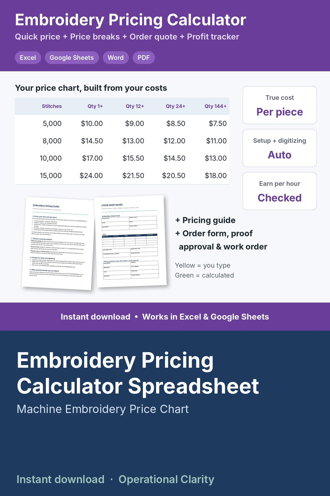

Embroidery Pricing Calculator Spreadsheet

EMBROIDERY PRICING CALCULATOR | Machine Embroidery Price Calculator Spreadsheet + Stitch Count Price Chart, Order Quote & Profit Tracker | Excel & Google Sheets | Instant Download
How much should you charge for embroidery? This calculator works it out from YOUR costs: stitch count, your real machine speed, number of heads, hooping and trimming time, thread, stabilizer, the blank and your hourly rate. No more copying someone else's price chart.
WHAT IT DOES
• Settings: hourly rate, machine speed, heads, hooping minutes, thread cost per 1,000 stitches, stabilizer, machine cost per hour, overhead, margin, setup and digitizing fees
• Blanks: tees, polos, hoodies, caps, totes, towels or anything you stitch on, with a handling markup. Customer-supplied items cost $0.
• Quick price: type a stitch count, locations, quantity and item. See every cost line, your TRUE COST per piece, suggested price, order total, profit and what you earn per hour
• "Am I charging enough?" check: enter your current price and see your profit and hourly earnings. Red means it's too low.
• Price breaks chart: stitch count x quantity (1+, 6+, 12+, 24+, 48+, 144+) that builds itself from your settings. Red cells warn you when a discount drops below cost.
• Order quote: multi-item orders with setup fees per design, digitizing, rush and shipping, deposit and balance due, plus an internal cost, profit and margin check
• Job log + monthly profit summary: revenue, profit, margin, hours worked, profit per hour and unpaid balances
• BONUS: Embroidery Pricing Guide (how to build stitch-based prices, minimums, setup fees and safe quantity breaks)
• BONUS: printable Order Form, Design Proof Approval and Production Work Order (Word + PDF)
WHAT YOU GET
• Embroidery Pricing Calculator (.xlsx) for Excel or Google Sheets
• Embroidery Pricing Guide (Word + PDF)
• Embroidery Order & Work Order Forms (Word + PDF)
• Start Here guide (PDF)
Example numbers are included so you can see how it works. Replace them with your own.
GOOD TO KNOW
• Digital download. No physical item will be shipped.
• Not affiliated with any machine or software brand. Works with any embroidery machine.
• For use in your own business. No reselling or sharing of the files.